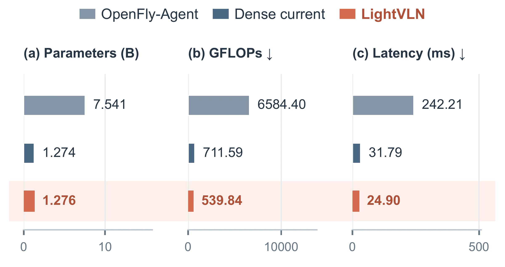
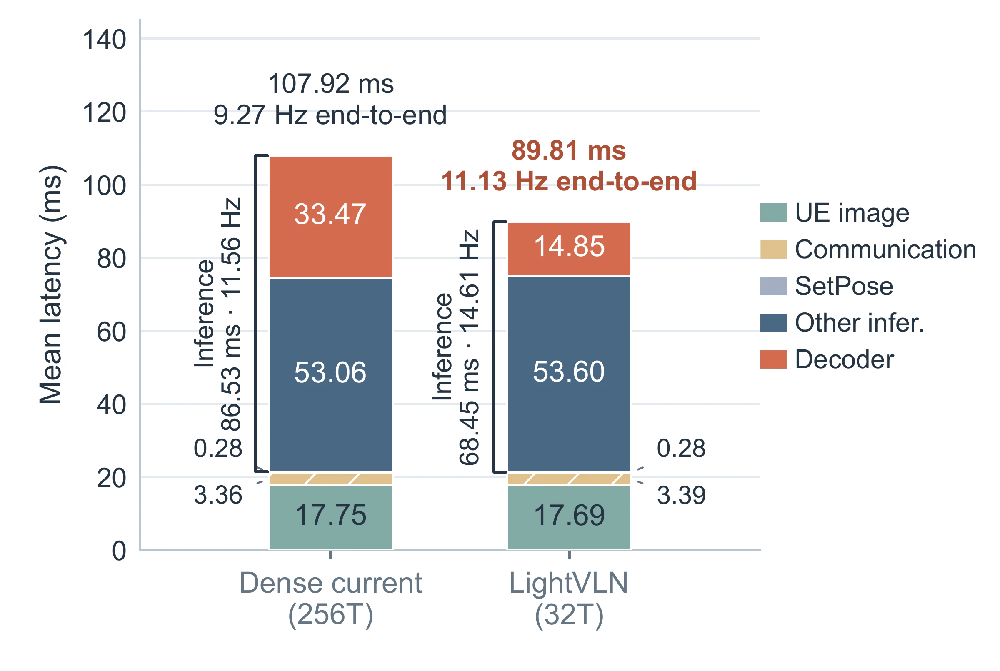
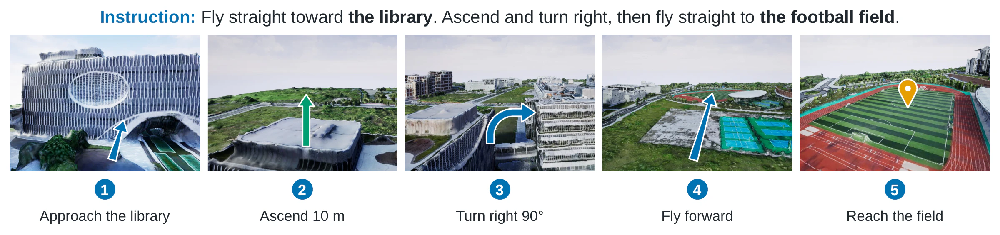

VISION-LANGUAGE NAVIGATION · 2026
LightVLN
Efficient Aerial Vision-and-Language Navigation with Compact Memory and History-Guided Local Aggregation
- The Hong Kong University of Science and Technology (Guangzhou)
- *Corresponding author
![Top: LightVLN's three lightweight components (a Qwen2.5-0.5B language backbone, single-token historical compression, and history- and instruction-conditioned local aggregation) and its two benchmarks, OpenFly and AerialVLN-S. Bottom: the closed-loop onboard-compute hardware-in-the-loop evaluation in four steps: campus reconstruction into a digital twin, Unreal Engine rendering of the current observation, LightVLN on a Jetson Orin NX predicting an action, and the simulator applying it to a virtual UAV.](assets/media/overview.webp)
OVERVIEW
Aerial navigation on a 0.5B language backbone and 48 visual tokens
Aerial vision-and-language navigation asks a UAV to follow long natural-language instructions from what it sees. Recent models rely on large vision-language backbones and dense visual histories, which makes them costly to run on board. LightVLN pairs a compact 0.5B language backbone with compact representations of both past and current observations: each past frame becomes a single token, and the current view is reduced from 256 to 32 tokens. With up to 16 past frames, the policy reads at most 48 observation-derived tokens.
-
01
Compact language backbone
Qwen2.5-0.5B reads the instruction and the visual tokens. The complete policy has about 1.276B parameters; 0.5B refers to the language backbone.
-
02
One token per past frame
History is built from visual features the policy has already computed, with no separate memory encoder and no re-encoding of past images.
-
03
256 → 32 current-view tokens
History and instruction guide a local aggregation over 32 fixed regions, so the compact view keeps its spatial coverage.
METHOD
Compact memory and history-guided local aggregation
At each step the policy predicts the next action from the current RGB frame, the instruction and up to 16 history tokens. Frozen DINOv2 and SigLIP encoders turn the frame into a 16 × 16 grid of patch features. A memory branch pools that grid into one token for the history cache; the main path aggregates it into 32 tokens. Qwen2.5-0.5B reads the tokens and a small action head picks one of eight actions.
![LightVLN architecture in five stages: inputs (instruction and one RGB frame), encoding (Qwen token embedding; shared DINOv2 and SigLIP encoders giving 256 visual tokens), current-frame compression by history- and instruction-conditioned local aggregation into 32 tokens, a multimodal token interface of text embeddings, 32 current tokens and 16 history tokens, and prediction by the Qwen2.5-0.5B backbone and an action head. Below, a persistent memory branch compresses each frame from 256 tokens to 1 and updates a first-in, first-out cache of the latest 16 frames.](assets/media/architecture.webp)
-
Single-token history
A learned query pools a frame's 256 patch features into one token with multi-head attention. After each action the feature joins a first-in, first-out cache of the latest 16 frames.
-
History-conditioned instruction
A summary of the history tokens attends over the instruction to select what matters at the current state. It refines the mean-pooled instruction through a learnable residual scale.
-
Local aggregation
The 16 × 16 grid is split into 32 non-overlapping 4 × 2 regions. Each region's eight tokens are combined by a softmax weighting against one shared query, giving one token per region.
-
Two-stage training
A single-frame base policy is trained first. Stage 1 freezes it and learns the history tokenizer; Stage 2 trains the final policy on cached history features.
RESULTS
Benchmarks, efficiency and onboard evaluation
Separate policies are trained on the released OpenFly and AerialVLN-S training splits from RGB images and instructions. A run succeeds when the UAV stops within 20 m of the goal; collisions count as failures. Efficiency is profiled on an RTX 4090 and, in a closed loop, on a Jetson Orin NX 16 GB.
- OpenFly · Test-Seen
- 50.93%
- Success rate; 36.14% on Test-Unseen. Table I.
- AerialVLN-S · Val-Seen
- 25.83%
- Success rate, from RGB observations only. Table II.
- Observation tokens
- ≤ 48
- 32 current-view tokens plus up to 16 history tokens, against 272 with a dense current view.
- Jetson Orin NX · HIL
- 14.61 Hz
- Model inference; 11.13 Hz end-to-end decision updates in the closed loop.
OpenFly
In the public OpenFly setting, LightVLN has the best navigation error, success rate and path efficiency on both splits among the compared methods, with a 0.5B language backbone against 7B.
Table I of the paper: OpenFly results. Scale is the language-backbone size. NE: navigation error; SR: success rate; OSR: oracle success rate; SPL: success weighted by path length.
| Method | Scale | Test-Seen | Test-Unseen | ||||||
|---|---|---|---|---|---|---|---|---|---|
| NE ↓ (m) | SR ↑ (%) | OSR ↑ (%) | SPL ↑ (%) | NE ↓ (m) | SR ↑ (%) | OSR ↑ (%) | SPL ↑ (%) | ||
| AirSim-only setting: 6 Seen scenes, 1,210 episodes | |||||||||
| AeroAct † | 8B | 38.00 | 54.50 | 72.10 | 49.90 | – | – | – | – |
| Public dataset setting: 7 Seen scenes / 1,392 episodes, 1 Unseen scene / 404 episodes | |||||||||
| CMA ‡ | – | 313.03 | 7.97 | 69.32 | 6.26 | 230.05 | 5.69 | 73.02 | 3.92 |
| AerialVLN ‡ | – | 176.29 | 16.52 | 65.66 | 14.63 | 161.19 | 9.65 | 68.07 | 7.93 |
| OpenFly-Agent (reported) | 7B | 118.72 | 28.76 | 63.10 | 18.71 | 164.40 | 26.20 | 68.80 | 18.00 |
| OpenFly-Agent (our re-eval.) § | 7B | 107.39 | 25.07 | 56.68 | 22.54 | 140.66 | 19.06 | 68.81 | 16.19 |
| DreamFly | 7B | 44.87 | 32.04 | 46.77 | 28.22 | 45.29 | 29.46 | 46.78 | 23.54 |
| LightVLN | 0.5B | 40.25 | 50.93 | 71.41 | 44.68 | 42.22 | 36.14 | 62.13 | 30.45 |
† AeroAct trains only on AirSim and evaluates on six AirSim scenes; the public evaluation additionally includes one Seen and one Unseen scene, so the two groups are not directly comparable. ‡ Results reported by DreamFly. § Released checkpoint re-evaluated on the same episodes and pipeline as LightVLN. Highlighted values are the best in the public dataset setting.
AerialVLN-S
On Val-Seen, LightVLN leads all four reported metrics, including against methods that use depth, panoramic observations or odometry.
Table II of the paper: AerialVLN-S Val-Seen. SDTW: success weighted by normalized dynamic time warping.
| Method | NE ↓ (m) | SR ↑ (%) | OSR ↑ (%) | SDTW ↑ (%) |
|---|---|---|---|---|
| With additional depth, panoramic observations or odometry | ||||
| LAG | 90.2 | 7.2 | 15.7 | 2.4 |
| STMR | 96.3 | 12.6 | 31.6 | 2.7 |
| CityNavAgent | 80.8 | 13.9 | 30.2 | 5.1 |
| LookasideVLN | 77.1 | 14.7 | 31.2 | 5.4 |
| Monocular RGB | ||||
| NaVid | 105.1 | 6.8 | 15.5 | 1.1 |
| OpenFly-Agent | 127.2 | 8.1 | 21.8 | 1.6 |
| AeroAct | 79.6 | 11.4 | 37.7 | 6.3 |
| LightVLN | 65.61 | 25.83 | 41.74 | 22.76 |
Efficiency
Against a dense-current counterpart with the same history and 256 current-view tokens, LightVLN cuts observation-derived tokens from 272 to 48. Full-model computation falls from 711.59 to 539.84 GFLOPs and RTX 4090 latency from 31.79 to 24.90 ms. On the Jetson Orin NX 16 GB it averages 68.45 ms per model inference and 89.81 ms end to end, against 86.53 and 107.92 ms for the dense-current model.


Unseen campus, in the loop
The authors reconstructed a campus from drone imagery, imported it into Unreal Engine / AirSim and built a 500-episode unseen evaluation set. With an OpenFly-trained checkpoint running on the Jetson Orin NX in the closed loop, LightVLN reaches 8.00% success rate, 65.00% oracle success rate and 56.06 m navigation error. The paper notes the gap between the two rates: reaching the goal's vicinity does not always end in a successful stop in the unseen environment.
DEMOS
Real onboard computation, virtual flight
In the hardware-in-the-loop setup, a Jetson Orin NX 16 GB mounted on a stationary, disarmed DJI M350 RTK runs LightVLN. A laptop renders the reconstructed campus in Unreal Engine / AirSim, sends RGB observations and applies the predicted actions to a virtual UAV.

No real-world flight is shown or claimed on this page: all motion is simulated.
CITATION
@misc{zhao2026lightvln,
title={LightVLN: Efficient Aerial Vision-and-Language Navigation with Compact Memory and History-Guided Local Aggregation},
author={Yiming Zhao and Tianshun Li and Jingle He and Ruonan Chai and Xinhu Zheng},
year={2026},
eprint={2610.05024},
archivePrefix={arXiv},
primaryClass={cs.CV},
url={https://arxiv.org/abs/2610.05024},
}